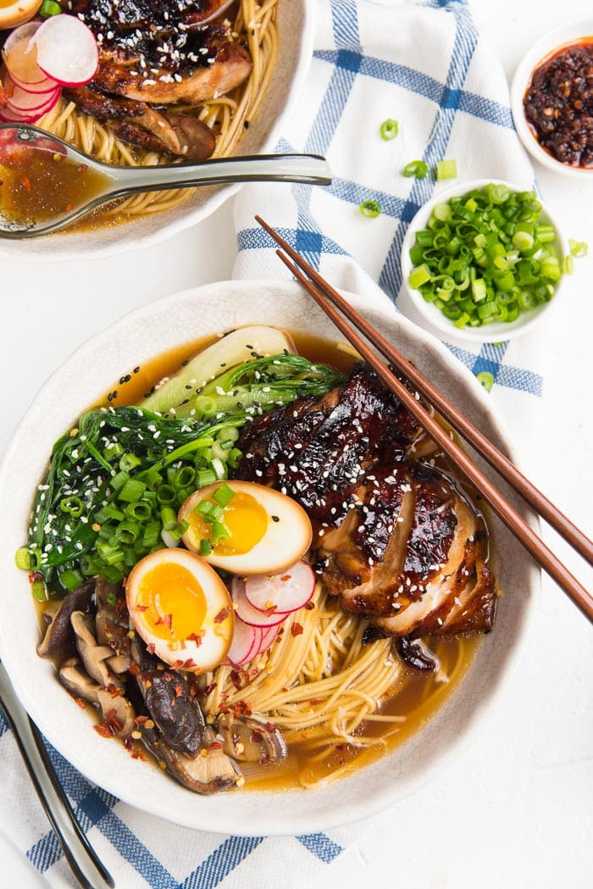

If you love classic homemade chicken ramen, that is simple to make, but you can still customize to your taste then this chicken ramen recipe is for you!
I'm going to show you how to make a delicious bowl of ramen that tastes like an authentic Shoyu Ramen bowl, plus I'll share shortcuts to make this homemade chicken ramen even easier. The easy version of this recipe can be made in 30 minutes, and the more elaborate version (with the caramelized chicken) can take about 45 minutes.